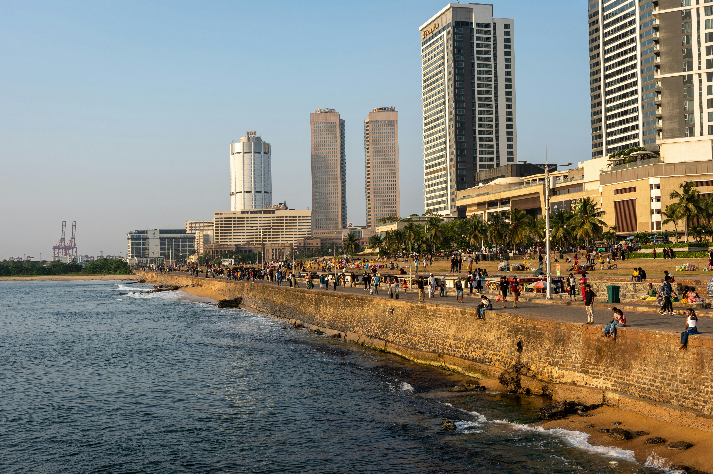
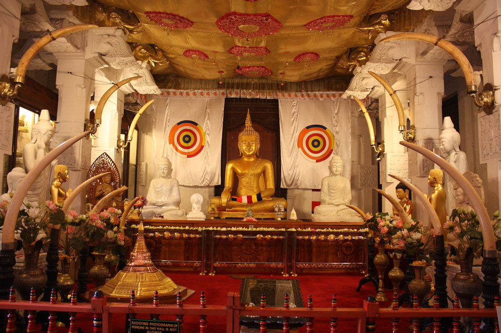
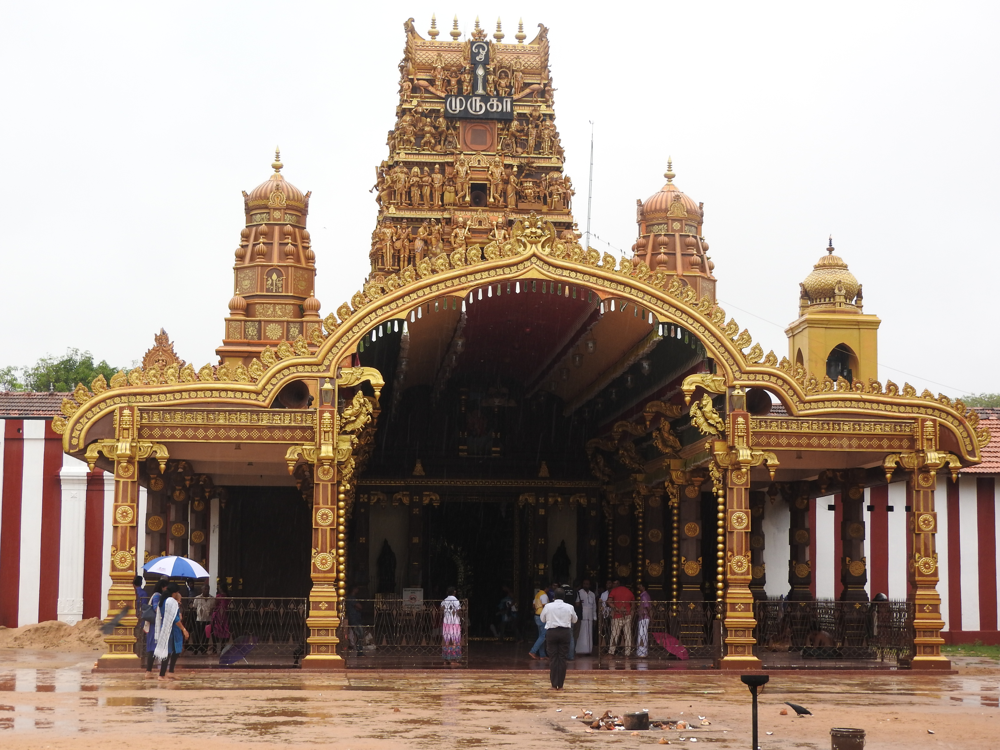
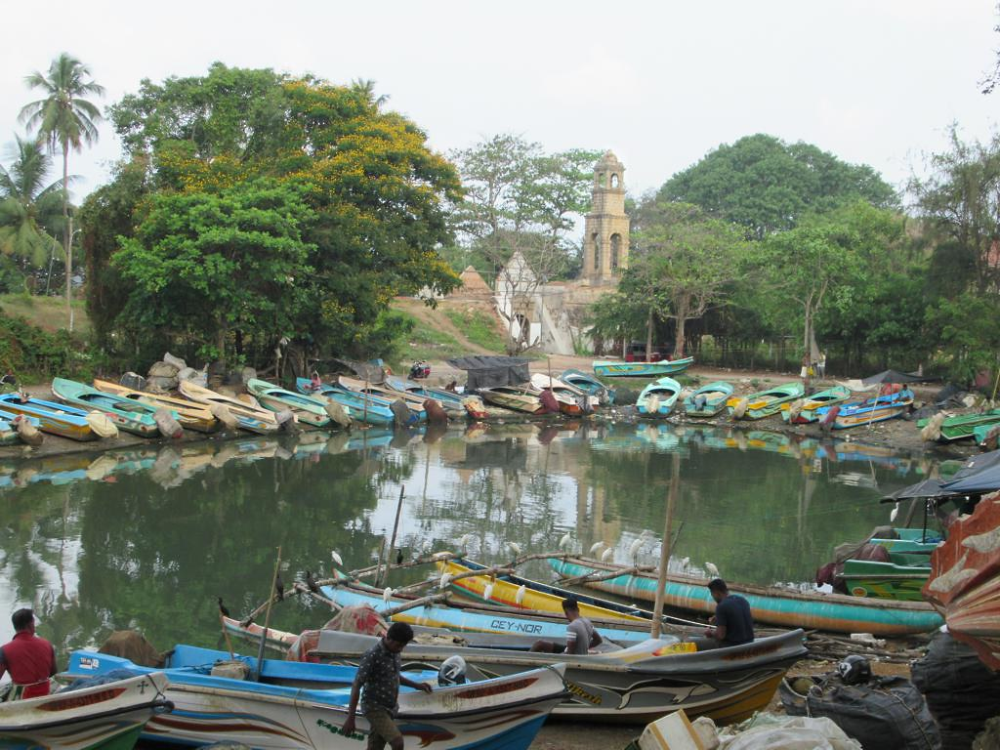

Colombo
Fechas disponibles: 11-18 Febrero
Capital dinámica que mezcla modernidad y tradición. Visita el paseo marítimo de Galle Face Green, templos budistas y mercados locales.


Fechas disponibles: 11-18 Febrero
Capital dinámica que mezcla modernidad y tradición. Visita el paseo marítimo de Galle Face Green, templos budistas y mercados locales.

Fechas disponibles: 24-31 Marzo
Ciudad sagrada rodeada de montañas. Alberga el Templo del Diente de Buda y ofrece paisajes naturales espectaculares.

Fechas disponibles: 6-13 Mayo
Ciudad costera con un encantador fuerte colonial declarado Patrimonio de la Humanidad. Ideal para pasear por sus calles históricas junto al mar.

Fechas disponibles: 9-16 Agosto
Ciudad del norte con una cultura única. Descubre templos hindúes, fortalezas y una rica tradición local menos turística.

Fechas disponibles: 21-28 Noviembre
Destino costero cercano al aeropuerto. Conocido por sus playas, canales y ambiente relajado ideal para comenzar o finalizar el viaje.